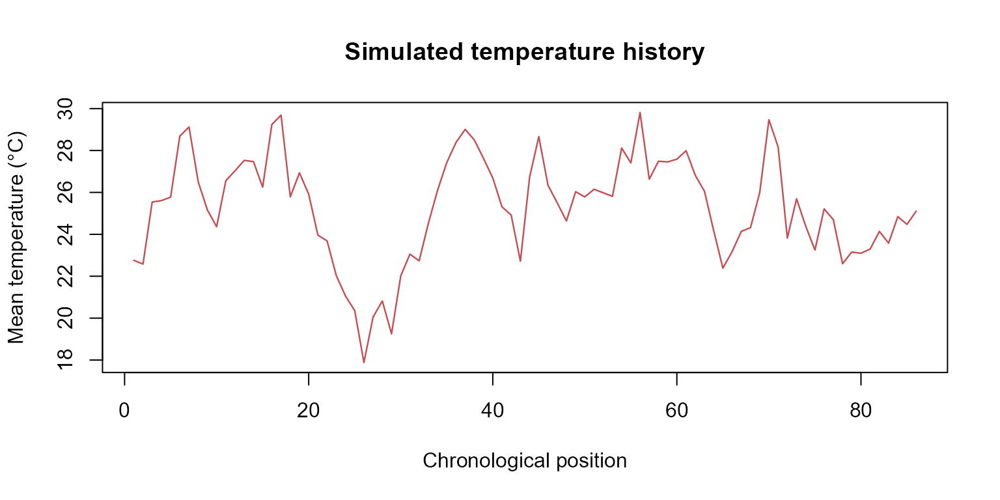
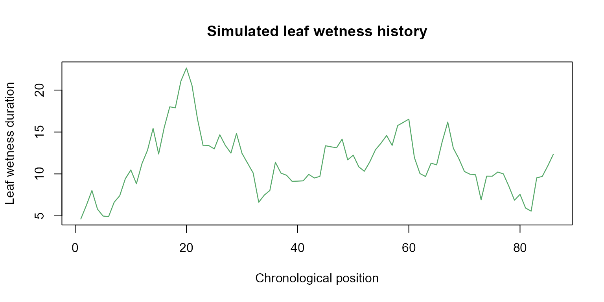
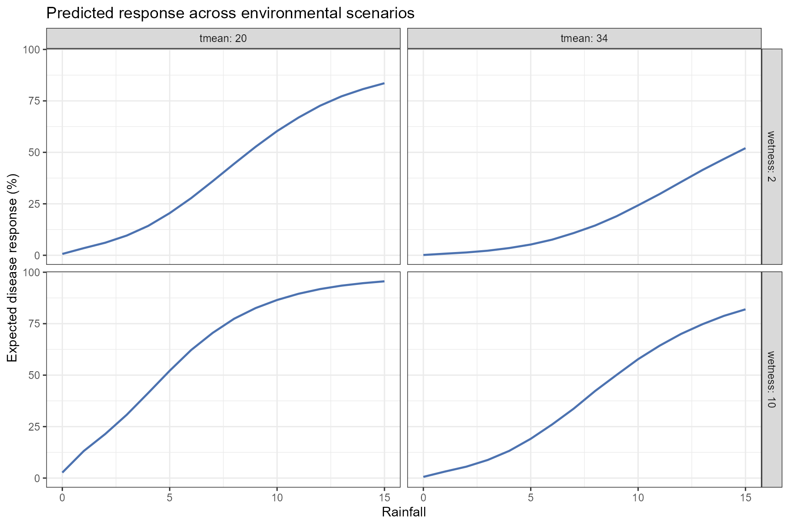
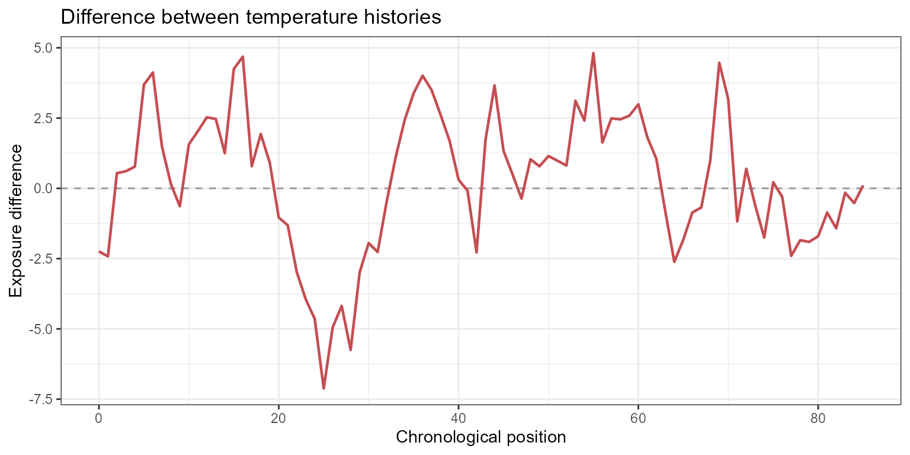

Simulation and Prediction
Ricardo G. Tomáz
Source:vignettes/simulation-prediction.Rmd
simulation-prediction.RmdIntroduction
Understanding historical exposure-lag associations is important for epidemiological interpretation, but researchers are often interested in a different question:
What is the expected disease outcome under an alternative environmental history?
EpiExposure provides simulation and prediction tools
that allow researchers to:
- generate complete synthetic exposure histories;
- introduce structured exposure events;
- construct hypothetical epidemiological scenarios;
- predict expected disease outcomes;
- propagate parameter uncertainty;
- compare alternative exposure profiles and their predictions.
Unlike lag-specific effect summaries, prediction evaluates all exposure values and lags jointly. Therefore, every prediction represents a complete environmental history rather than an isolated exposure value.
What you will learn. This tutorial shows how to simulate complete exposure histories, predict expected disease outcomes, propagate parameter uncertainty, construct scenario grids, and compare alternative environmental conditions.
The outputs describe predictions and contrasts under the fitted statistical model. Hypothetical scenarios should not automatically be interpreted as causal interventions unless the study design and assumptions support that interpretation.
Preparing the example model
This section uses the same dataset and DLNM specification introduced in the previous tutorials.
data("epi_data")Define the exposure-lag structures:
cb <- define_exposures(
data = epi_data,
vars = c(
"tmean",
"rain",
"wetness"
),
max_lag = 85,
df_var = 3,
df_lag = 2
)Build the epidemic-level design:
dat <- build_design(
data = epi_data,
cb_templates = cb
)Prepare the response:
dat <- prepare_response(
data = dat,
response = "y",
family = "beta"
)Fit the model:
fit <- fit_epidlnm(
data = dat,
model_engine = "glmmTMB",
family = "beta",
random_effect = NULL,
epiexposure_spec = attr(
cb,
"spec"
)
)The fitted model relates complete histories of temperature, rainfall, and leaf wetness to the expected disease response.
Complete exposure histories
Each exposure supplied to predict_outcomes() must
contain exactly:
chronologically ordered observations.
With:
max_lag = 85each profile must contain 86 values:
position 1 → time 0 → maximum lag
position 86 → time 85 → lag 0The order is chronological. EpiExposure converts these
positions into retrospective lags when reconstructing the cross-basis
predictors.
Complete profiles are required. Temperature, rainfall, and leaf wetness profiles must have the same length and temporal interpretation used to fit the model. Coordinates, blocks, years, and other grouping variables are not exposure profiles.
Simulating exposure histories
Why simulate exposures?
Environmental conditions rarely occur as isolated observations. Disease development can reflect sequences of temperature, rainfall, leaf wetness, and other exposures occurring throughout the epidemic.
simulate_exposures() generates complete chronological
profiles that can be used in prediction and scenario analysis.
A simulated exposure profile is not a disease prediction. It becomes
a prediction scenario only after it is combined with the other required
exposures and supplied to predict_outcomes().
Simulating a background process
The following example generates a temperature profile using an autoregressive background process:
temperature_profile <- simulate_exposures(
max_lag = 85,
mode = "profile",
seed = 123,
background = list(
dist = "ar1",
mean = 25,
sd = 4,
phi = 0.90
)
)The result contains the simulated chronological profile:
#> $profiles
#> $profiles$simulation_1
#> time_0 time_1 time_2 time_3 time_4 time_5 time_6 time_7
#> 22.75810 22.58096 25.54056 25.60944 25.77392 28.68685 29.12180 26.50391
#> time_8 time_9 time_10 time_11 time_12 time_13 time_14 time_15
#> 25.15595 24.36331 26.56124 27.03248 27.52800 27.46818 26.25222 29.24259
#> time_16 time_17 time_18 time_19 time_20 time_21 time_22 time_23
#> 29.68636 25.78881 26.93278 25.91517 23.96184 23.68560 22.02814 21.05446
#> time_24 time_25 time_26 time_27 time_28 time_29 time_30 time_31
#> 20.35922 17.88245 20.05494 20.81686 19.25076 22.01179 23.05417 22.73428
#> time_32 time_33 time_34 time_35 time_36 time_37 time_38 time_39
#> 24.52156 26.10048 27.42291 28.38130 29.00896 28.50012 27.61664 26.69160
#> time_40 time_41 time_42 time_43 time_44 time_45 time_46 time_47
#> 25.31118 24.91755 22.71950 26.72925 28.66248 26.33803 25.50177 24.63795
#> time_48 time_49 time_50 time_51 time_52 time_53 time_54 time_55
#> 26.03407 25.78531 26.14845 25.98383 25.81070 28.11587 27.41064 29.81363
#> time_56 time_57 time_58 time_59 time_60 time_61 time_62 time_63
#> 26.63193 27.48804 27.45519 27.58617 27.98948 26.81470 26.05226 24.17109
#> time_64 time_65 time_66 time_67 time_68 time_69 time_70 time_71
#> 22.38525 23.17595 24.13983 24.31826 25.99447 29.46946 28.16638 23.82356
#> time_72 time_73 time_74 time_75 time_76 time_77 time_78 time_79
#> 25.69477 24.38876 23.25030 25.21342 24.69556 22.59761 23.15396 23.09640
#> time_80 time_81 time_82 time_83 time_84 time_85
#> 23.29681 24.13889 23.57873 24.84437 24.47550 25.10643
#>
#>
#> $profile
#> time_0 time_1 time_2 time_3 time_4 time_5 time_6 time_7
#> 22.75810 22.58096 25.54056 25.60944 25.77392 28.68685 29.12180 26.50391
#> time_8 time_9 time_10 time_11 time_12 time_13 time_14 time_15
#> 25.15595 24.36331 26.56124 27.03248 27.52800 27.46818 26.25222 29.24259
#> time_16 time_17 time_18 time_19 time_20 time_21 time_22 time_23
#> 29.68636 25.78881 26.93278 25.91517 23.96184 23.68560 22.02814 21.05446
#> time_24 time_25 time_26 time_27 time_28 time_29 time_30 time_31
#> 20.35922 17.88245 20.05494 20.81686 19.25076 22.01179 23.05417 22.73428
#> time_32 time_33 time_34 time_35 time_36 time_37 time_38 time_39
#> 24.52156 26.10048 27.42291 28.38130 29.00896 28.50012 27.61664 26.69160
#> time_40 time_41 time_42 time_43 time_44 time_45 time_46 time_47
#> 25.31118 24.91755 22.71950 26.72925 28.66248 26.33803 25.50177 24.63795
#> time_48 time_49 time_50 time_51 time_52 time_53 time_54 time_55
#> 26.03407 25.78531 26.14845 25.98383 25.81070 28.11587 27.41064 29.81363
#> time_56 time_57 time_58 time_59 time_60 time_61 time_62 time_63
#> 26.63193 27.48804 27.45519 27.58617 27.98948 26.81470 26.05226 24.17109
#> time_64 time_65 time_66 time_67 time_68 time_69 time_70 time_71
#> 22.38525 23.17595 24.13983 24.31826 25.99447 29.46946 28.16638 23.82356
#> time_72 time_73 time_74 time_75 time_76 time_77 time_78 time_79
#> 25.69477 24.38876 23.25030 25.21342 24.69556 22.59761 23.15396 23.09640
#> time_80 time_81 time_82 time_83 time_84 time_85
#> 23.29681 24.13889 23.57873 24.84437 24.47550 25.10643
#>
#> $simulation_data
#> simulation position time lag profile
#> 1 1 1 0 85 22.75810
#> 2 1 2 1 84 22.58096
#> 3 1 3 2 83 25.54056
#> 4 1 4 3 82 25.60944
#> 5 1 5 4 81 25.77392
#> 6 1 6 5 80 28.68685
#> 7 1 7 6 79 29.12180
#> 8 1 8 7 78 26.50391
#> 9 1 9 8 77 25.15595
#> 10 1 10 9 76 24.36331
#> 11 1 11 10 75 26.56124
#> 12 1 12 11 74 27.03248
#> 13 1 13 12 73 27.52800
#> 14 1 14 13 72 27.46818
#> 15 1 15 14 71 26.25222
#> 16 1 16 15 70 29.24259
#> 17 1 17 16 69 29.68636
#> 18 1 18 17 68 25.78881
#> 19 1 19 18 67 26.93278
#> 20 1 20 19 66 25.91517
#> 21 1 21 20 65 23.96184
#> 22 1 22 21 64 23.68560
#> 23 1 23 22 63 22.02814
#> 24 1 24 23 62 21.05446
#> 25 1 25 24 61 20.35922
#> 26 1 26 25 60 17.88245
#> 27 1 27 26 59 20.05494
#> 28 1 28 27 58 20.81686
#> 29 1 29 28 57 19.25076
#> 30 1 30 29 56 22.01179
#> 31 1 31 30 55 23.05417
#> 32 1 32 31 54 22.73428
#> 33 1 33 32 53 24.52156
#> 34 1 34 33 52 26.10048
#> 35 1 35 34 51 27.42291
#> 36 1 36 35 50 28.38130
#> 37 1 37 36 49 29.00896
#> 38 1 38 37 48 28.50012
#> 39 1 39 38 47 27.61664
#> 40 1 40 39 46 26.69160
#> 41 1 41 40 45 25.31118
#> 42 1 42 41 44 24.91755
#> 43 1 43 42 43 22.71950
#> 44 1 44 43 42 26.72925
#> 45 1 45 44 41 28.66248
#> 46 1 46 45 40 26.33803
#> 47 1 47 46 39 25.50177
#> 48 1 48 47 38 24.63795
#> 49 1 49 48 37 26.03407
#> 50 1 50 49 36 25.78531
#> 51 1 51 50 35 26.14845
#> 52 1 52 51 34 25.98383
#> 53 1 53 52 33 25.81070
#> 54 1 54 53 32 28.11587
#> 55 1 55 54 31 27.41064
#> 56 1 56 55 30 29.81363
#> 57 1 57 56 29 26.63193
#> 58 1 58 57 28 27.48804
#> 59 1 59 58 27 27.45519
#> 60 1 60 59 26 27.58617
#> 61 1 61 60 25 27.98948
#> 62 1 62 61 24 26.81470
#> 63 1 63 62 23 26.05226
#> 64 1 64 63 22 24.17109
#> 65 1 65 64 21 22.38525
#> 66 1 66 65 20 23.17595
#> 67 1 67 66 19 24.13983
#> 68 1 68 67 18 24.31826
#> 69 1 69 68 17 25.99447
#> 70 1 70 69 16 29.46946
#> 71 1 71 70 15 28.16638
#> 72 1 72 71 14 23.82356
#> 73 1 73 72 13 25.69477
#> 74 1 74 73 12 24.38876
#> 75 1 75 74 11 23.25030
#> 76 1 76 75 10 25.21342
#> 77 1 77 76 9 24.69556
#> 78 1 78 77 8 22.59761
#> 79 1 79 78 7 23.15396
#> 80 1 80 79 6 23.09640
#> 81 1 81 80 5 23.29681
#> 82 1 82 81 4 24.13889
#> 83 1 83 82 3 23.57873
#> 84 1 84 83 2 24.84437
#> 85 1 85 84 1 24.47550
#> 86 1 86 85 0 25.10643
#>
#> $meta
#> $meta$max_lag
#> [1] 85
#>
#> $meta$profile_length
#> [1] 86
#>
#> $meta$profile_order
#> [1] "chronological"
#>
#> $meta$chronological_time
#> [1] 0 1 2 3 4 5 6 7 8 9 10 11 12 13 14 15 16 17 18 19 20 21 22 23 24
#> [26] 25 26 27 28 29 30 31 32 33 34 35 36 37 38 39 40 41 42 43 44 45 46 47 48 49
#> [51] 50 51 52 53 54 55 56 57 58 59 60 61 62 63 64 65 66 67 68 69 70 71 72 73 74
#> [76] 75 76 77 78 79 80 81 82 83 84 85
#>
#> $meta$retrospective_lag
#> [1] 85 84 83 82 81 80 79 78 77 76 75 74 73 72 71 70 69 68 67 66 65 64 63 62 61
#> [26] 60 59 58 57 56 55 54 53 52 51 50 49 48 47 46 45 44 43 42 41 40 39 38 37 36
#> [51] 35 34 33 32 31 30 29 28 27 26 25 24 23 22 21 20 19 18 17 16 15 14 13 12 11
#> [76] 10 9 8 7 6 5 4 3 2 1 0
#>
#> $meta$mode
#> [1] "profile"
#>
#> $meta$pattern
#> [1] NA
#>
#> $meta$background
#> $meta$background$dist
#> [1] "ar1"
#>
#> $meta$background$mean
#> [1] 25
#>
#> $meta$background$sd
#> [1] 4
#>
#> $meta$background$phi
#> [1] 0.9
#>
#>
#> $meta$bounds
#> NULL
#>
#> $meta$seed
#> [1] 123
#>
#> $meta$time_range
#> [1] 0 1 2 3 4 5 6 7 8 9 10 11 12 13 14 15 16 17 18 19 20 21 22 23 24
#> [26] 25 26 27 28 29 30 31 32 33 34 35 36 37 38 39 40 41 42 43 44 45 46 47 48 49
#> [51] 50 51 52 53 54 55 56 57 58 59 60 61 62 63 64 65 66 67 68 69 70 71 72 73 74
#> [76] 75 76 77 78 79 80 81 82 83 84 85
#>
#> $meta$cumulative
#> [1] FALSE
#>
#> $meta$bounds_apply_to
#> [1] "profile_values"
#>
#> $meta$n
#> [1] 1
#>
#> $meta$n_profiles
#> [1] 1
#>
#> $meta$profile_contract
#> [1] "canonical_profiles_list_chronological"
#>
#> $meta$lag_contract
#> [1] "lag_0_most_recent"
#>
#> $meta$rng_contract
#> [1] "local_seed_restores_caller_rng"
#>
#> $meta$simulation_contract
#> [1] "n_exposure_profiles_no_model_parameter_uncertainty"
#>
#> $meta$selected_times
#> integer(0)
#>
#> $meta$selected_positions
#> integer(0)
#>
#> $meta$selected_internal_lags
#> integer(0)
#>
#>
#> $simulation_meta
#> $simulation_meta$simulation_1
#> $simulation_meta$simulation_1$simulation
#> [1] 1
#>
#> $simulation_meta$simulation_1$selected_times
#> integer(0)
#>
#> $simulation_meta$simulation_1$selected_positions
#> integer(0)
#>
#> $simulation_meta$simulation_1$selected_internal_lags
#> integer(0)Visualize the complete profile:
plot(
temperature_profile$profile,
type = "l",
lwd = 1.2,
col = "#C44E52",
xlab = "Chronological position",
ylab = "Mean temperature (°C)",
main = "Simulated temperature history"
)
The autoregressive parameter:
phi = 0.90produces temporal dependence among consecutive observations. It does not represent an exposure-lag effect. The lag-response relationship remains determined by the fitted DLNM.
Simulating structured exposure events
A structured event can be superimposed on a background profile.
The following example constructs a rainfall pattern with values assigned to selected portions of the temporal history:
rain_profile <- simulate_exposures(
max_lag = 85,
mode = "pattern",
pattern = "block_times",
block_times = c(
0,
40
),
fixed_value = 15,
background = list(
dist = "fixed",
value = 0
)
)Visualize the rainfall profile:
plot(
rain_profile$profile,
type = "s",
lwd = 1.2,
col = "#4C72B0",
xlab = "Chronological position",
ylab = "Rainfall",
main = "Simulated rainfall history"
)A leaf wetness profile can be generated independently:
wetness_profile <- simulate_exposures(
max_lag = 85,
mode = "profile",
seed = 456,
background = list(
dist = "ar1",
mean = 10,
sd = 4,
phi = 0.90
)
)
plot(
wetness_profile$profile,
type = "l",
lwd = 1.2,
col = "#55A868",
xlab = "Chronological position",
ylab = "Leaf wetness duration",
main = "Simulated leaf wetness history"
)
The three profiles can now be combined into one complete hypothetical environmental history.
Predicting disease outcomes
Deterministic prediction
predict_outcomes() reconstructs the fitted cross-basis
values from the supplied profiles and calculates the expected response
under the fitted model.
prediction <- predict_outcomes(
fit = fit,
profiles = list(
tmean = temperature_profile$profile,
rain = rain_profile$profile,
wetness = wetness_profile$profile
),
uncertainty = FALSE
)
prediction
#> prediction
#> 1 0.1195241The prediction combines:
- all temperature values and lags;
- all rainfall values and lags;
- all leaf wetness values and lags;
- the fitted joint cross-basis coefficients;
- the inverse link required by the response family.
For the fitted Beta model, the result is an expected response on the proportion scale.
The prediction is not a newly simulated disease observation. It represents the central expected response associated with the complete exposure history.
Prediction uncertainty
A deterministic prediction uses the central fitted coefficient estimates. However, the coefficients are estimated with uncertainty.
When:
uncertainty = TRUEEpiExposure propagates joint coefficient uncertainty
through the complete prediction calculation.
To inspect individual uncertainty realizations, request sample-level output:
prediction_samples <- predict_outcomes(
fit = fit,
profiles = list(
tmean = temperature_profile$profile,
rain = rain_profile$profile,
wetness = wetness_profile$profile
),
uncertainty = TRUE,
n_samples = 1000,
output = "samples",
seed = 123
)Inspect the first realizations:
| sample | prediction |
|---|---|
| 1 | 0.1424 |
| 2 | 0.0954 |
| 3 | 0.1765 |
| 4 | 0.1030 |
| 5 | 0.1641 |
| 6 | 0.1242 |
| 7 | 0.1088 |
| 8 | 0.0885 |
| 9 | 0.1529 |
| 10 | 0.1414 |
Visualize the prediction distribution:
ggplot(
prediction_samples,
aes(
x = prediction * 100
)
) +
geom_histogram(
bins = 25,
fill = "#4C72B0",
color = "white"
) +
theme_bw() +
labs(
x = "Predicted disease response (%)",
y = "Number of uncertainty realizations",
title = "Parameter uncertainty in the predicted response"
)
This distribution represents parameter uncertainty in the expected response. It does not include observation-level noise and should not be interpreted as a distribution of newly simulated disease observations.
A summarized prediction can also be requested when individual realizations are not needed:
prediction_summary <- predict_outcomes(
fit = fit,
profiles = list(
tmean = temperature_profile$profile,
rain = rain_profile$profile,
wetness = wetness_profile$profile
),
uncertainty = TRUE,
n_samples = 1000,
output = "summary",
seed = 123
)
prediction_summary
#> prediction prediction_sd prediction_lower prediction_upper
#> 1 0.1193798 0.03606169 0.06598203 0.2043394Scenario simulation
Why construct scenarios?
A single profile describes one complete hypothetical history. Scenario analysis extends this idea by evaluating multiple combinations of environmental conditions systematically.
Possible questions include:
- How does the predicted response change across rainfall levels?
- Does the rainfall association differ under distinct temperature conditions?
- Which combinations of temperature and leaf wetness yield larger expected responses?
- How does the timing of an exposure pattern alter the prediction?
These are model-based comparisons. They describe how the fitted model responds to supplied histories and do not automatically demonstrate causal interventions.
Defining epidemiological periods
The scenario grid can be organized using epidemiological periods:
periods <- define_periods(
max_lag = 85,
cuts = c(
20,
40,
60
),
prefix = "Period"
)
periods
#> period lag_start lag_end
#> 1 Period1 0 20
#> 2 Period2 21 40
#> 3 Period3 41 60
#> 4 Period4 61 85The resulting periods divide the retrospective lag interval into four subintervals.
Remember that lag order is retrospective:
smaller lag → closer to disease assessment
larger lag → earlier exposure conditionGenerating candidate scenarios
The following example varies rainfall across a grid while evaluating selected temperature and leaf wetness conditions:
scenarios <- simulate_ranges(
periods = periods,
vary = list(
tmean = c(
20,
34
),
rain = seq(
0,
15,
by = 1
),
wetness = c(
2,
10
)
),
scenario_type = "grid",
scenario_var = "rain"
)Predicting scenario outcomes
pred_scenarios <- simulate_scenarios(
fit = fit,
scenarios = scenarios,
data = epi_data,
uncertainty = TRUE,
output = "summary",
n_samples = 1000,
seed = 123
)Inspect the predictions:
| scenario | scenario_point | tmean | rain | wetness | prediction | prediction_sd | prediction_lower | prediction_upper |
|---|---|---|---|---|---|---|---|---|
| RAIN_s1 | 1 | 20 | 0 | 2 | 0.0064 | 0.0023 | 0.0035 | 0.0125 |
| RAIN_s2 | 1 | 34 | 0 | 2 | 0.0014 | 0.0020 | 0.0003 | 0.0073 |
| RAIN_s3 | 1 | 20 | 1 | 2 | 0.0346 | 0.0305 | 0.0093 | 0.1184 |
| RAIN_s4 | 1 | 34 | 1 | 2 | 0.0077 | 0.0154 | 0.0010 | 0.0512 |
| RAIN_s5 | 1 | 20 | 2 | 2 | 0.0610 | 0.0411 | 0.0188 | 0.1670 |
| RAIN_s6 | 1 | 34 | 2 | 2 | 0.0137 | 0.0234 | 0.0020 | 0.0871 |
| RAIN_s7 | 1 | 20 | 3 | 2 | 0.0958 | 0.0480 | 0.0362 | 0.2208 |
| RAIN_s8 | 1 | 34 | 3 | 2 | 0.0222 | 0.0323 | 0.0036 | 0.1272 |
| RAIN_s9 | 1 | 20 | 4 | 2 | 0.1428 | 0.0551 | 0.0652 | 0.2805 |
| RAIN_s10 | 1 | 34 | 4 | 2 | 0.0351 | 0.0446 | 0.0060 | 0.1759 |
Visualizing scenario predictions
The modeled rainfall association can be displayed across combinations of temperature and leaf wetness:
ggplot(
pred_scenarios,
aes(
x = rain,
y = prediction * 100,
group = interaction(
wetness,
tmean
)
)
) +
geom_line(
linewidth = 0.8,
color = "#4C72B0"
) +
facet_grid(
rows = vars(
wetness
),
cols = vars(
tmean
),
labeller = label_both
) +
theme_bw() +
labs(
x = "Rainfall",
y = "Expected disease response (%)",
title = "Predicted response across environmental scenarios"
)
The figure should be interpreted as a visualization of the fitted model over the scenario grid. Predictions far outside the observed exposure support should be treated cautiously.
Scenario surfaces
When enough values are evaluated along two continuous dimensions, predictions can be presented as a scenario surface.
The current example evaluates only two temperature values. Therefore, a line or point representation is more appropriate than a dense continuous surface.
A tile display can still summarize the evaluated grid:
ggplot(
pred_scenarios,
aes(
x = rain,
y = factor(
tmean
),
fill = prediction * 100
)
) +
geom_tile() +
facet_wrap(
vars(
wetness
),
labeller = label_both
) +
scale_fill_viridis_c(
name = "Expected\ndisease (%)"
) +
theme_bw() +
labs(
x = "Rainfall",
y = "Mean temperature",
title = "Predicted response across the evaluated scenario grid"
)
A smoother surface requires a denser sequence of temperature values
in simulate_ranges().
Comparing exposure histories
Why compare profiles?
Two complete exposure histories can have similar averages while differing in timing, variability, persistence, or extreme values.
compare_exposures() describes differences between two
exposure profiles directly, before disease predictions are compared.
exposure_comparison <- compare_exposures(
exposure1 = temperature_profile$profile,
exposure2 = rep(
25,
86
),
mode = "timewise"
)Inspect the comparison:
| exposure1 | exposure2 | position | time | lag | value1 | value2 | diff | abs_diff | ratio | ratio_defined |
|---|---|---|---|---|---|---|---|---|---|---|
| exposure1 | exposure2 | 1 | 0 | 85 | 22.758 | 25 | -2.242 | 2.242 | 0.910 | TRUE |
| exposure1 | exposure2 | 2 | 1 | 84 | 22.581 | 25 | -2.419 | 2.419 | 0.903 | TRUE |
| exposure1 | exposure2 | 3 | 2 | 83 | 25.541 | 25 | 0.541 | 0.541 | 1.022 | TRUE |
| exposure1 | exposure2 | 4 | 3 | 82 | 25.609 | 25 | 0.609 | 0.609 | 1.024 | TRUE |
| exposure1 | exposure2 | 5 | 4 | 81 | 25.774 | 25 | 0.774 | 0.774 | 1.031 | TRUE |
| exposure1 | exposure2 | 6 | 5 | 80 | 28.687 | 25 | 3.687 | 3.687 | 1.147 | TRUE |
| exposure1 | exposure2 | 7 | 6 | 79 | 29.122 | 25 | 4.122 | 4.122 | 1.165 | TRUE |
| exposure1 | exposure2 | 8 | 7 | 78 | 26.504 | 25 | 1.504 | 1.504 | 1.060 | TRUE |
| exposure1 | exposure2 | 9 | 8 | 77 | 25.156 | 25 | 0.156 | 0.156 | 1.006 | TRUE |
| exposure1 | exposure2 | 10 | 9 | 76 | 24.363 | 25 | -0.637 | 0.637 | 0.975 | TRUE |
Visualize the differences:
ggplot(
exposure_comparison,
aes(
x = time,
y = diff
)
) +
geom_hline(
yintercept = 0,
color = "grey60",
linetype = "dashed"
) +
geom_line(
linewidth = 0.8,
color = "#C44E52"
) +
theme_bw() +
labs(
x = "Chronological position",
y = "Exposure difference",
title = "Difference between temperature histories"
)
This comparison describes the exposure profiles themselves. It does not yet indicate whether the fitted model predicts different disease outcomes.
Comparing predictions
Defining candidate histories
The following profiles represent two complete hypothetical environmental histories:
scenario_A <- list(
tmean = rep(
25,
86
),
rain = rep(
5,
86
),
wetness = rep(
10,
86
)
)
scenario_B <- list(
tmean = rep(
34,
86
),
rain = rep(
15,
86
),
wetness = rep(
20,
86
)
)The scenarios differ simultaneously in all three exposures. Therefore, the resulting prediction contrast represents their combined change and should not be attributed to one exposure individually.
Comparing expected outcomes
prediction_comparison <- compare_predictions(
fit = fit,
profiles = list(
A = scenario_A,
B = scenario_B
),
uncertainty = TRUE,
n_samples = 1000,
seed = 123
)
prediction_comparison
#> scenario1 scenario2 pred1 pred1_sd pred1_lower pred1_upper pred2
#> 1 A B 0.8488397 0.0322545 0.7776632 0.9029296 0.980287
#> pred2_sd pred2_lower pred2_upper diff diff_sd diff_lower diff_upper
#> 1 0.03257791 0.8937059 0.9972314 0.1270512 0.05137956 0.02233513 0.21234
#> abs_diff abs_diff_sd abs_diff_lower abs_diff_upper percentage_point_change
#> 1 0.1273395 0.0452089 0.0326767 0.2131056 12.70512
#> percentage_point_change_sd percentage_point_change_lower
#> 1 5.137956 2.233513
#> percentage_point_change_upper relative_defined_fraction
#> 1 21.234 1
#> relative_change_defined ratio ratio_sd ratio_lower ratio_upper
#> 1 TRUE 1.148629 0.06563577 1.025754 1.272211
#> percent_change percent_change_sd percent_change_lower percent_change_upper
#> 1 14.86291 6.563577 2.575395 27.22106The comparison quantifies the difference in the expected response between the two complete histories under the fitted model.
For a variable-specific comparison, change one exposure at a time while holding the other profiles constant.
For example:
scenario_low_rain <- list(
tmean = rep(
25,
86
),
rain = rep(
2,
86
),
wetness = rep(
10,
86
)
)
scenario_high_rain <- list(
tmean = rep(
25,
86
),
rain = rep(
15,
86
),
wetness = rep(
10,
86
)
)
rainfall_comparison <- compare_predictions(
fit = fit,
profiles = list(
low_rain = scenario_low_rain,
high_rain = scenario_high_rain
),
uncertainty = TRUE,
n_samples = 1000,
seed = 123
)
rainfall_comparison
#> scenario1 scenario2 pred1 pred1_sd pred1_lower pred1_upper pred2
#> 1 low_rain high_rain 0.5818581 0.116623 0.3443916 0.7858604 0.9910837
#> pred2_sd pred2_lower pred2_upper diff diff_sd diff_lower diff_upper
#> 1 0.004417166 0.9806425 0.9961524 0.4096384 0.1196277 0.2007757 0.6515508
#> abs_diff abs_diff_sd abs_diff_lower abs_diff_upper percentage_point_change
#> 1 0.4096384 0.1196277 0.2007757 0.6515508 40.96384
#> percentage_point_change_sd percentage_point_change_lower
#> 1 11.96277 20.07757
#> percentage_point_change_upper relative_defined_fraction
#> 1 65.15508 1
#> relative_change_defined ratio ratio_sd ratio_lower ratio_upper
#> 1 TRUE 1.703248 0.4325714 1.255485 2.891892
#> percent_change percent_change_sd percent_change_lower percent_change_upper
#> 1 70.32475 43.25714 25.54854 189.1892Because temperature and leaf wetness remain unchanged, this contrast isolates the modeled difference associated with the two supplied rainfall histories, conditional on the fixed profiles of the other exposures.
Interpreting simulation and prediction outputs
Simulation and prediction tools provide related but distinct outputs:
-
simulate_exposures()creates one complete exposure profile; -
simulate_ranges()constructs combinations of candidate exposure values; -
simulate_scenarios()predicts outcomes over multiple scenarios; -
predict_outcomes()predicts the expected response for complete profiles; -
compare_exposures()compares the exposure histories themselves; -
compare_predictions()compares their model-based expected outcomes.
Before interpreting a result, verify:
- whether the exposure histories are chronological;
- whether every profile contains
max_lag + 1observations; - whether all exposures required by the fitted model were supplied;
- whether scenario values are supported by the observed data;
- whether multiple exposures changed simultaneously;
- whether uncertainty was propagated;
- whether the output contains summaries or individual samples;
- whether the prediction is population-level or group-specific;
- whether the interpretation is associational or supported by a causal design.
Prediction is not observation simulation.
predict_outcomes() returns the expected response under the
fitted model. Parameter uncertainty can be propagated through
coefficient draws, but this does not automatically add observation-level
variability.
Summary
This section demonstrated how EpiExposure transforms a
fitted DLNM into a framework for evaluating complete exposure
histories.
The workflow allows users to:
- generate chronological exposure profiles;
- add structured exposure patterns;
- predict expected disease outcomes;
- propagate parameter uncertainty;
- evaluate scenario grids;
- compare exposure histories;
- compare predicted responses.
These tools extend inference from the fitted exposure-lag surface to explicit, model-based comparisons of complete environmental histories.
Next steps
The next section translates predicted disease outcomes into practical
outcomes such as yield and economic losses using the
simulate_losses() function.
These tools connect exposure-lag-response relationships with agronomic and economic consequences.